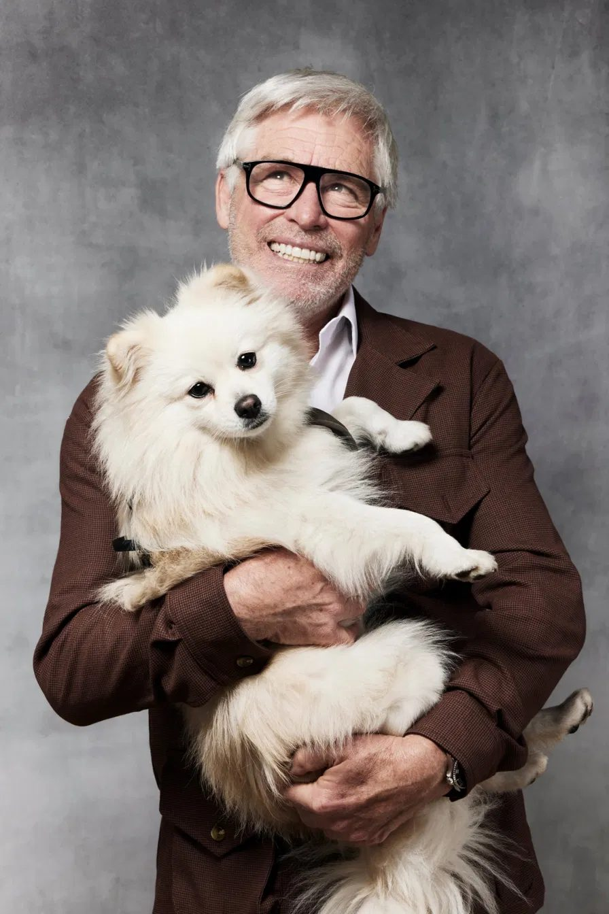
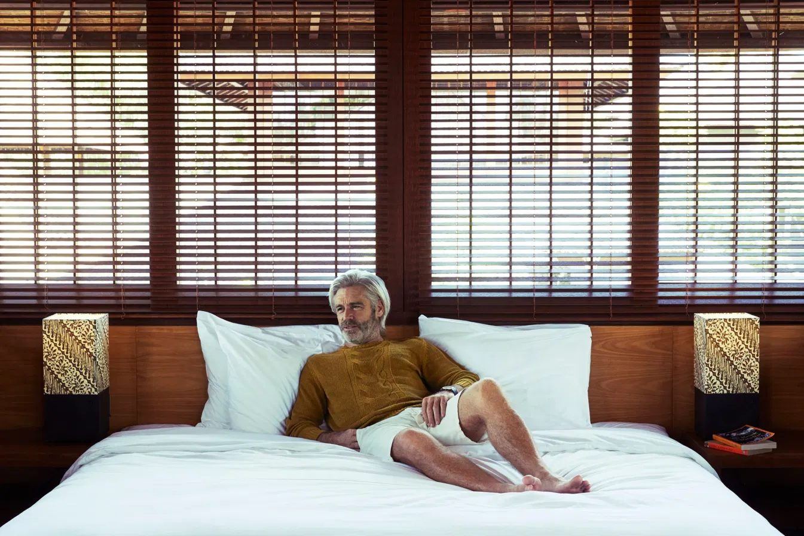
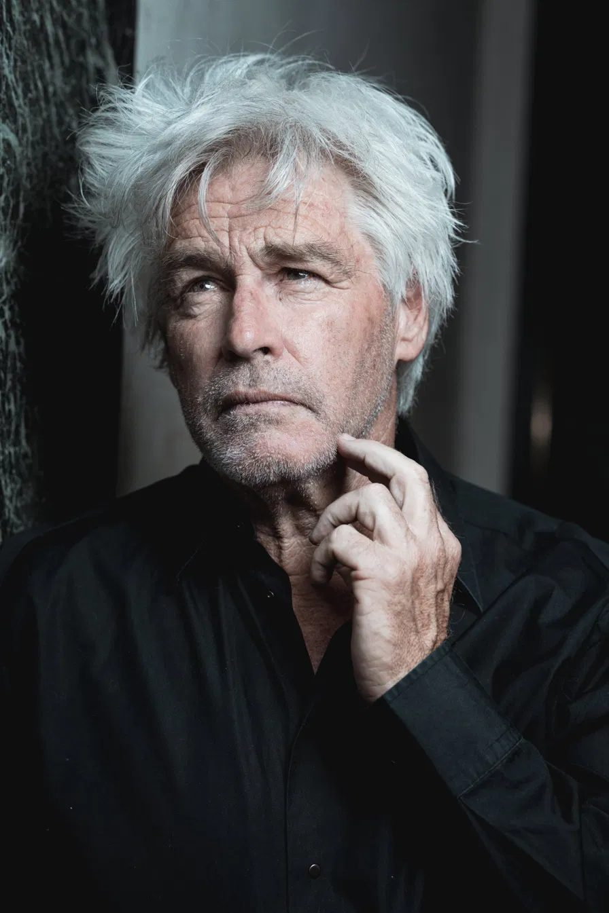
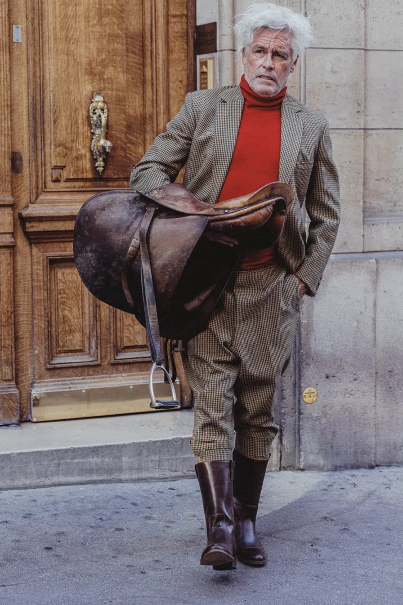
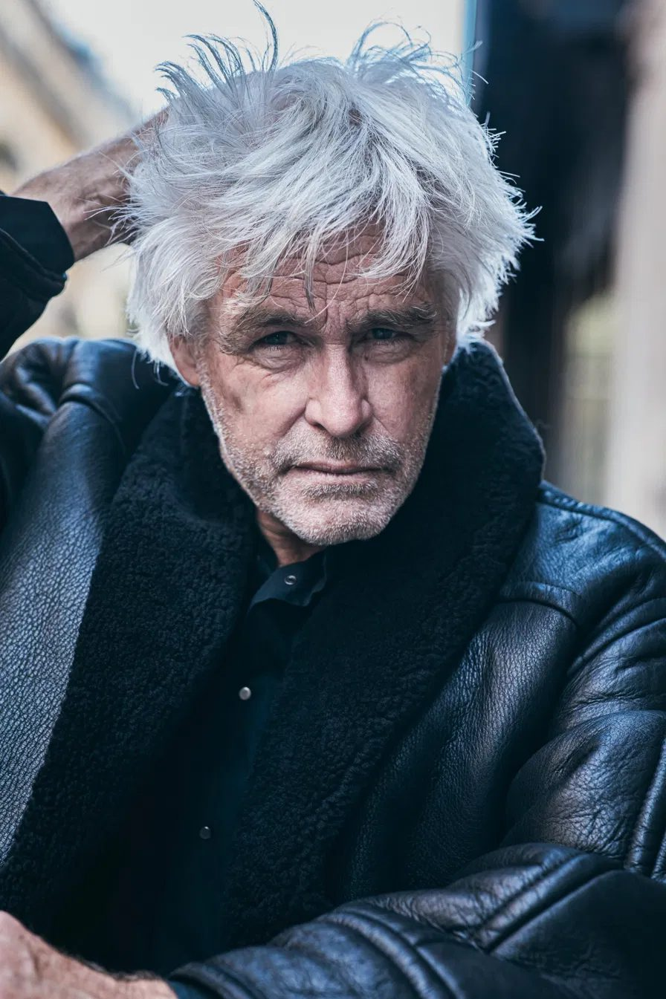
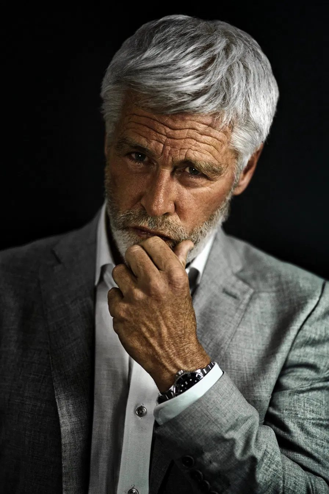
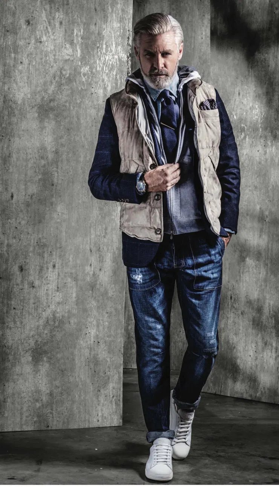
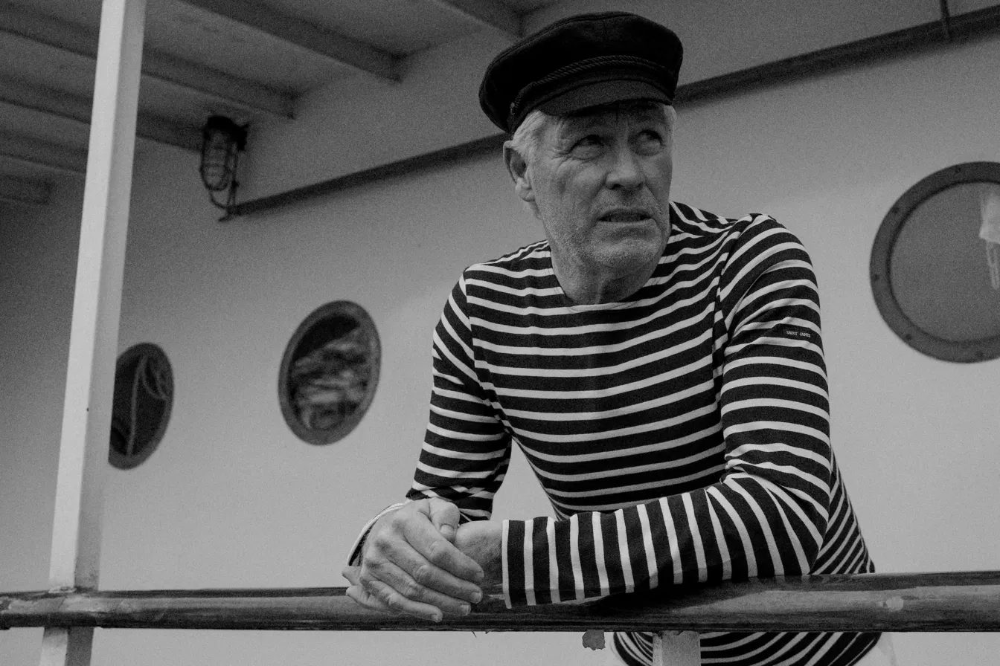

Le guide, par un mannequin qui fait ce métier depuis plus de 30 ans
Pas besoin de payer une formation à 1000 ou 2000 euros. Ce guide te donne les étapes dans l'ordre, avec ce que j'ai appris sur le terrain.
Des promesses. Très peu de gens vivent à 100% du mannequinat, et je te dis comment le faire sans prendre de risque.
30 minutes avec moi, pour 50 €. Tu m'envoies tes photos, je te dis quel est ton style, je te donne la direction artistique de ton premier test, et je te dirige vers le photographe qui te correspond.
Je m'appelle William. Cela fait plus de 30 ans que j'évolue dans ce métier, et je l'ai bien cerné, en France et à travers le monde. Tout ce qui est dans ce guide, je l'ai vécu.
Devenir mannequin 40+ : le guide
Qui recrute et pourquoi ?
Les marques ne cherchent pas un mannequin de 20 ans, elles cherchent un client crédible. Les 40 ans+ ont le pouvoir d'achat, donc les annonceurs ont besoin de visages auxquels ils s'identifient.
Les besoins sont locaux autant que nationaux : une PME qui n'a pas d'agence de pub cherche un visage à petit budget, et c'est souvent là que démarre un mannequin senior.
Le type de mannequinat dépend de ton âge. Étant jeune, ton créneau, ce sont les défilés de mode, les éditoriaux de magazines et aussi les campagnes de marques cosmétiques et de parfums. À 40 ans+, le travail se trouve ailleurs.
En print, c'est-à-dire en photo, tu fais du lifestyle : Monsieur / Madame tout le monde, photogénique. Quelqu'un d'authentique, de naturel, qui ressemble au client de la marque, avec une belle allure et une vraie présence.

Vidéos / pub : vidéos corporate, pub télévision et pubs diverses.
C'est ce que les agences et les clients veulent voir : des gens crédibles dans la vie de tous les jours. Ce n'est pas un second choix, c'est le plus gros marché pour ton âge.

Voilà ce que ce métier m'a appris : on ne m'a jamais appelé parce que j'étais « un mannequin », mais parce que j'avais un visage précis pour un besoin précis.
À 40 ans+, tu n'as plus besoin de ressembler à un mannequin de 20 ans : ton visage, tes cheveux et ton allure sont ce que les clients achètent.

Prends une feuille. Note tes cheveux (couleur, longs, courts, clairsemés), ta barbe ou non pour les hommes, ton maquillage habituel pour les femmes, ton regard, ta silhouette. Tu notes seulement ce qui se voit, sans juger.
Demande à 3 personnes honnêtes : « Si tu me croisais dans la rue, tu penserais que je fais quel métier ? » Les réponses possibles : chef d'entreprise, médecin, artiste, sportif, grand-père gentil, grand-mère chaleureuse. Note ce qu'elles disent.
Si 2 personnes sur 3 disent « chef d'entreprise », c'est ton type. Ne cherche pas à être ce que tu n'es pas : ça se voit sur les photos.
Chef d'entreprise : costume ou tailleur, chemise ou chemisier. Artiste : veste en cuir, tweed, tout noir. Sportif : tenue de sport. Prends des vêtements que tu portes déjà et qui te vont vraiment.
Exemples : « Homme, cheveux blancs, allure d'homme d'affaires élégant. » ou « Femme, cheveux argentés, allure élégante et naturelle. » Tu utiliseras ta phrase dans tous tes mails et sur tes fiches d'agence.
Ton premier test, même avec un iPhone
C'est la seule vraie dépense du parcours, et elle ne coûte pas une formation. Ne commence pas par un book complet : fais d'abord un test.
Si tu débutes, pas besoin de payer un photographe tout de suite. Fais tes premières photos avec un iPhone assez récent.

Quand tes premières images plaisent à l'agence, c'est elle qui t'envoie chez un photographe. Elle peut aussi déduire le test de tes prochains cachets.
Un bon photographe pour une personne peut être le mauvais pour une autre. Le choix dépend de ton style, mais aussi de ce que tu as déjà dans ton book, de ce qui lui manque, et du créneau que tu vises : publicité, mode, corporate, lifestyle.
J'ai travaillé avec plusieurs photographes que je connais personnellement, et j'ai appris à mes dépens lequel convient à quoi. Ces adresses ne sont pas dans ce guide, parce qu'elles ne se donnent pas sans connaître ton profil. Pendant un consulting de 30 minutes, je regarde tes photos, je te demande ce que tu vises, et je te dirige vers le photographe qui correspond, avec un bon rapport qualité prix.
Agences, directeurs de casting et PME locales
Aujourd'hui, personne n'a le temps de décrocher le téléphone ni de lire un flyer. Ce qui marche, c'est un message court, bien ciblé, envoyé par écrit. Voici comment faire, étape par étape.
Ne démarche jamais une agence sans photos. Un message sans images n'est pas lu.
Avant d'écrire à qui que ce soit, rassemble dans un même dossier sur ton téléphone :
Que tu envoies un test fait avec un photographe, avec un ami ou avec un proche, une agence te demandera systématiquement des polaroids. Joins-les dès le premier mail.
Ce sont des photos toutes simples, prises le jour même :
Les 5 photos à faire : une en pied, une de trois quarts, une de profil, une de face et une souriante.
Cherche sur Internet les agences de mannequins de ta ville, puis des grandes villes proches. Vérifie qu'elles ont une catégorie pour les 40 ans+, ou qu'elles montrent déjà des visages matures. Pour chaque agence, note le nom, la ville et l'email ou le lien du formulaire de contact. Ajoute les directeurs de casting de ta région et les PME locales qui ont besoin d'images : opticiens, hôtels, résidences seniors, assurances.
Il doit tenir en 5 lignes :
Utilise l'email, le formulaire de contact du site ou LinkedIn. N'envoie jamais un message identique à toutes les agences : change au moins la première phrase.
Quand tu écris à une agence parisienne, indique ta ville dès le message. Cacher ton adresse ne sert à rien, elle la demandera de toute façon.
Habiter en province est souvent un obstacle pour une agence de Paris, parce qu'elle veut pouvoir t'envoyer à un casting rapidement. Mais aujourd'hui beaucoup de castings se font en ligne, par photo ou par vidéo. Dans ton message, précise donc deux choses :
Si tu es loin de Paris, vise aussi les agences de ta région et des grandes villes proches, où ton adresse est un avantage.
Si tu n'as pas de réponse après 10 jours, envoie un message très court. Si tu n'as toujours rien, passe à la cible suivante, sans insister.
Avant de te signer, une agence veut presque toujours te voir en vrai. Les photos ouvrent la porte, mais c'est ce rendez-vous qui décide. Que tu sois un homme ou une femme, les règles sont les mêmes.

Parle franchement de ta vie : ce que tu fais, ton métier, ta situation, tes aspirations et ce que tu attends du mannequinat. Une agence travaille mieux avec quelqu'un d'honnête qu'avec quelqu'un qui cache des choses et qu'elle découvre plus tard.
Quelles agences répondent vraiment aux 40 ans+, comment tourner le message selon l'agence, et à qui l'adresser : je donne tout ça pendant le consulting de 30 minutes.
Remplace ce qui est entre crochets, puis change au moins la première phrase pour chaque destinataire.
Avant d'envoyer : change au moins la première phrase pour chaque destinataire, relis, et vérifie que les photos et les polaroids sont bien joints.
En présentiel ou en vidéo chez toi
Il y en a encore, surtout dans les grandes villes : Paris avant tout, parfois Lyon. Si tu habites loin, dis à ton agence combien de jours par mois tu peux venir.
Aujourd'hui, la majorité se fait en vidéo. Tu te filmes chez toi et tu envoies la vidéo. Ce que tu envoies compte beaucoup, parce que tu n'es pas seul sur le casting : d'autres candidats envoient aussi leur vidéo. Mets toutes les chances de ton côté.

Une bonne lumière, un fond épuré et un téléphone stable valent mieux qu'un décor compliqué. Suis toujours les consignes précises de l'agence ou du casting.
Avant d'envoyer ta vidéo, vérifie :
Ce que les directeurs de casting regardent vraiment dans une vidéo, et comment bien tourner chaque type de casting : je te le dis pendant le consulting de 30 minutes.
Avant de signer, avant d'accepter un job, et le statut fiscal
Une agence ne l'impose pas. Si tu donnes l'exclusivité à une agence, elle devient ton agence mère. Il n'y a ni durée ni territoire attachés à l'exclusivité.

Le client paie l'agence, puis l'agence te paie : compte souvent plusieurs semaines. Garde une trace écrite de chaque job (date, client, montant). Les tarifs varient beaucoup selon le client, le pays et l'utilisation des images.
Avant de gagner ton premier cachet, rapproche-toi d'un comptable pour savoir quel statut prendre. Beaucoup de gens se demandent s'ils doivent devenir auto-entrepreneur, mais le régime des mannequins est différent.
En France : tu es souvent salarié par les agences françaises, avec des cotisations importantes à payer.
À l'étranger : tu peux aussi être amené à travailler pour des agences étrangères. Dans ce cas, il faut savoir comment déclarer tes revenus étrangers dans ta déclaration française.
C'est un sujet complexe, mais ce n'est pas urgent. Tu le règles avec ton comptable après tes premiers jobs, pas avant.
Une simple vitrine
Ils ne te ramèneront pas de clients tout seuls. Ne passe pas tes journées à poster en espérant être repéré, et n'attends pas des milliers de followers. Les jobs viennent des agences, des directeurs de casting et du démarchage écrit (chapitre 4).
Quand une agence ou un directeur de casting reçoit ton message, il va souvent regarder ton compte. Il doit y trouver :
C'est tout. Une fois en place, tu n'as presque plus à y toucher.
On te promettra parfois des clients, des abonnés ou des castings contre de l'argent : faux comptes, faux agents, formations. Ne paie jamais pour être « repéré » sur un réseau social.
Sans tout quitter
À 40 ans+, personne ne te demande d'avoir 20 ans, ni d'être 100% fit. Les agences et les clients cherchent des gens crédibles, pas des athlètes.
Beaucoup de gens font de la promotion, proposent des formations et te disent de tout quitter, ton travail et le reste, pour devenir mannequin. Surtout, ne le fais pas.
C'est un métier où très peu de gens vivent à 100% de leurs cachets.
Ne quitte pas ton emploi actuel. Garde au moins une autre source de revenus, pour ne pas être déçu.
Choisis un travail qui te laisse de la flexibilité : des horaires souples ou des jours libres, pour pouvoir partir en casting ou en shooting quand on t'appelle.

Tu as toutes les étapes. Si tu veux un avis personnel sur tes photos, ton style et les photographes à contacter, je le fais en 30 minutes.
50 € pour 30 minutes
Ce sont mes conseils et mes adresses, obtenus en plus de 30 ans de métier.
Tu m'envoies tes photos avant l'appel. Pendant 30 minutes :
Tu repars avec un plan précis, sans payer de formation.